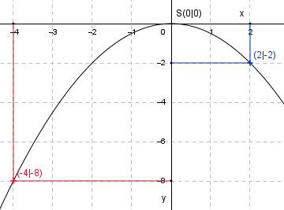

Aufgabe 6 y = f(x) = -0,5x2 Wertetabelle: x -4 -2 0 2 y -8 -2 0 -2 Es ist eine nach unten geöffnete (Zahl vor dem x2 ist negativ) und im Vergleich zur Normalparabel gestauchte Parabel (Zahl vor dem x2 ist dem Betrag nach kleiner als 1). Sie ist symmetrisch zur y-Achse und hat ihren Scheitelpunkt, den höchsten Punkt, bei S(0|0). 